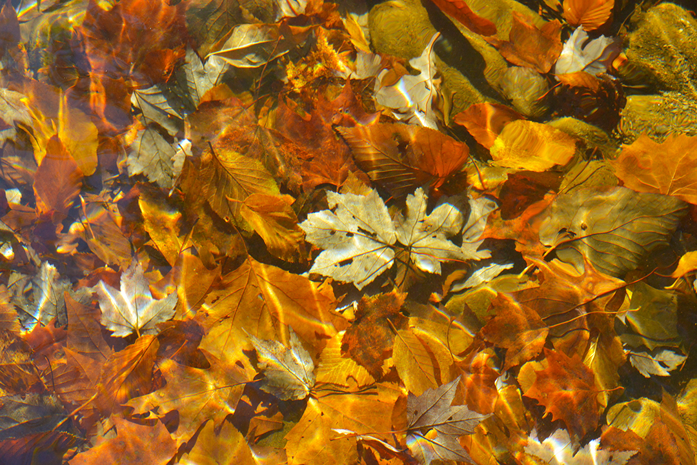
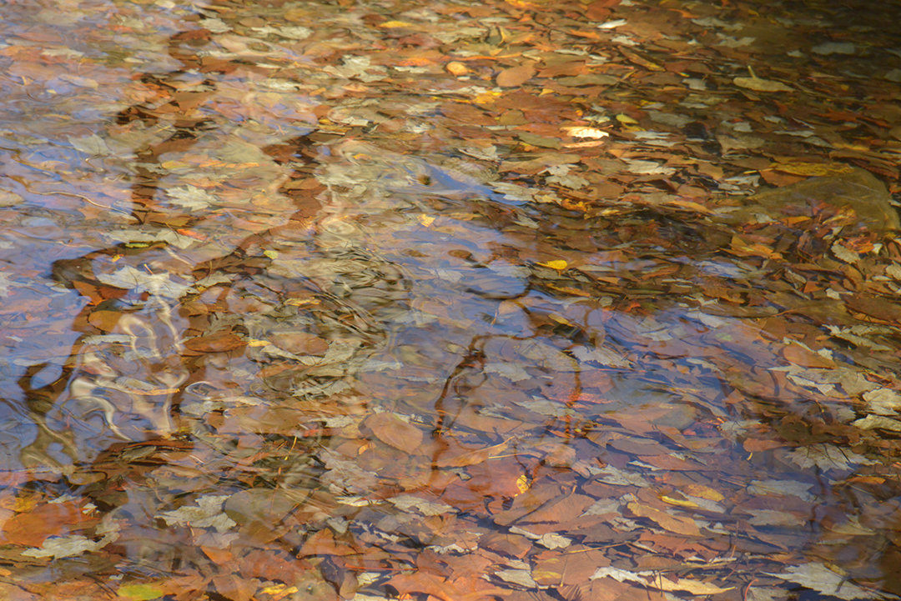
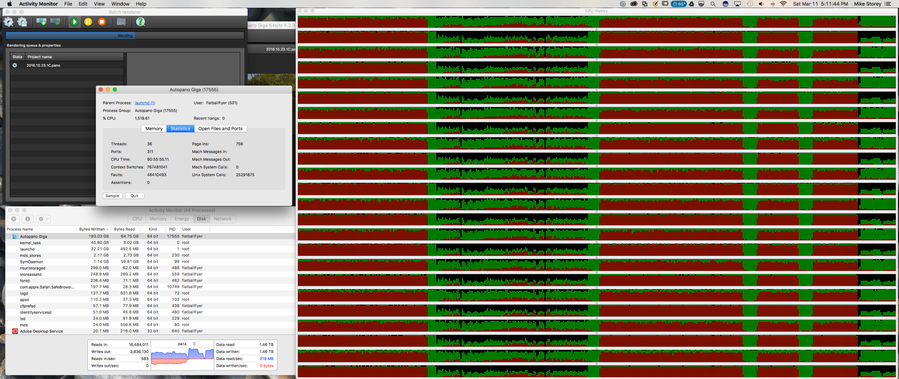
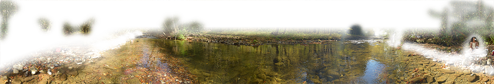
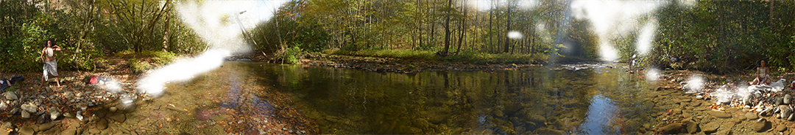
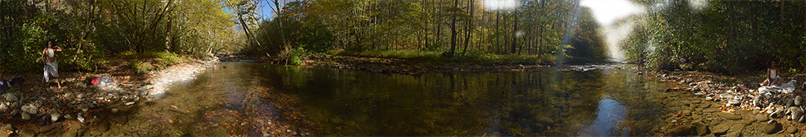
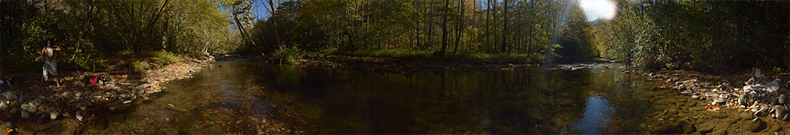
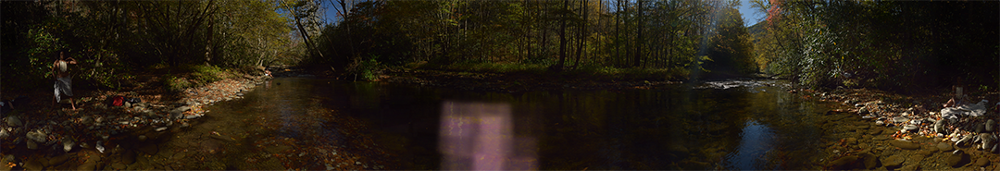
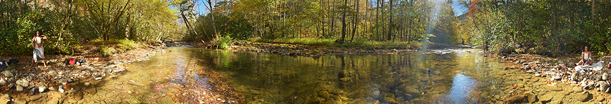

This is a journal of the shooting and stitching work that went into the Oconaluftee with Kenya panoramic. As your scroll down through the journal you can gain some insight into my process.
October 23, 2016
Went on an all day expedition with Micah Mackenzie and Kenya Stevens. It was a beautiful drive down from Asheville through Cherokee. We stoped at the shops in Cherokee and Micah worked his photography costume magic and put together the outfit that Kenya is wearing. Once we had driven down the river to a good spot, we packed up equipment and hiked a few hundred yards downstream to get to this spot. I spent a couple of hours knee deep in the river and I shot two complete pano's both bracketed at 7 exposures. The first pano was shot with a fixed focal length, and the 2nd one broke a cardinal rule of Gigapixel shooting and used auto-focus. The water was cold enough that my feet went numb after the first 10 minutes. After that it wasn't too bad.
As I slowly circled around the tripod I was fascinated by the texture of leafs on the river bed.

October 28, 2016 through February 24, 2017
Computer Hard Drive outage - all work halted.
March 4, 2017
After reviewing the pictures, I identified three pano's from Oconaluftee - due to some overlap between the two primary series. Initial control point discovery went fairly well, finding good control points for stitching everywhere but the river, which does leave a significant portion of the image to be manually linked. Low resolution stitching done of both sets went well and the auto-focus pano appears to be in surprisingly good shape. During the initial image reviews the following single struck me as another beautiful river-side texture, how many faces can you find?

March 5, 2017
I completed a medium resolution stitch of both panos early in the day. The autofocus image is looking so promising that I decide to move forward with it. After a few minutes doing layer masking, I flattened the image in preparation for a little pre-release sharing.
March 6, 2017
I imported the flattened image into PanoTour and created a quick tour with both flat and spherical projections. I'll be sharing this over the week to get some feedback and see if the level of excitement I feel about it is justified.
March 11, 2017
I received good reviews from friends this week. I determined that the darkest two exposures are not going to contribute any content, so I've removed those images and ended up with 1,120 images (5 brackets, 7 rows, 32 columns). I spent the day manually creating control points for the lightest two layers of the river. Throughout the course of the day I did four more stitches at 80% of full resolution, found and corrected several areas where links were bad, or needed adjustment. Late in the evening I kicked off a full-resolution stitch to run overnight.
March 12, 2017
After some fairly detailed review and 2 more rounds of control point tuning and full resolution stitches, I decided it was good enough to start final post in PhotoShop. For those geeks out there - this is a sample of what a stitch can use in computing power. The stitch is just over 50% complete, at 80+ CPU Hours of processing. Current utilization is just under 100% of 24 CPU's, and you can see a history of 300Mb/s disk I/O.

Enough for the geeks, post processing in PhotoShop for this image consisted largely of creating layer masks to expose the correct layer. I prefer this to computer managed HDR and with the moving water in the foreground there are additional challenges using computational HDR. After this final stitch I found several places where there are still minor stitch mis-alignments, however I was able to use the image from another layer to deal with most of these issues. When I got down to only two or three very small artifacts I decided it's done..... which is not an easy thing to do. I did however get to the point that I would have to throw away over 16hrs of editing to correct the remaining errors, and most of them are not visible unless you are zoomed all the way in and looking at the correct location. This is what the masked layers ended up looking like. They are shown layered from the top down.





The final numbers are pretty impressive.....
File Size: 73.3 Gb
Source Images: 1,120 (5x7x32 @ 30Megapixel)
Image Size: 4.095 Gigapixels
Dimensions (Pixels): 26,472 x 154,707
Dimensions (@300dpi): 7' 4" x 43' 1"
